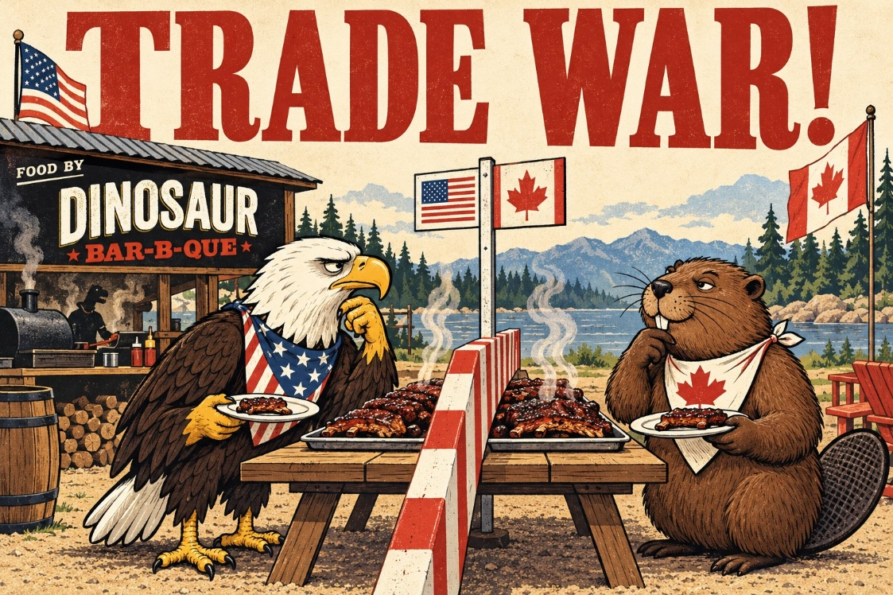
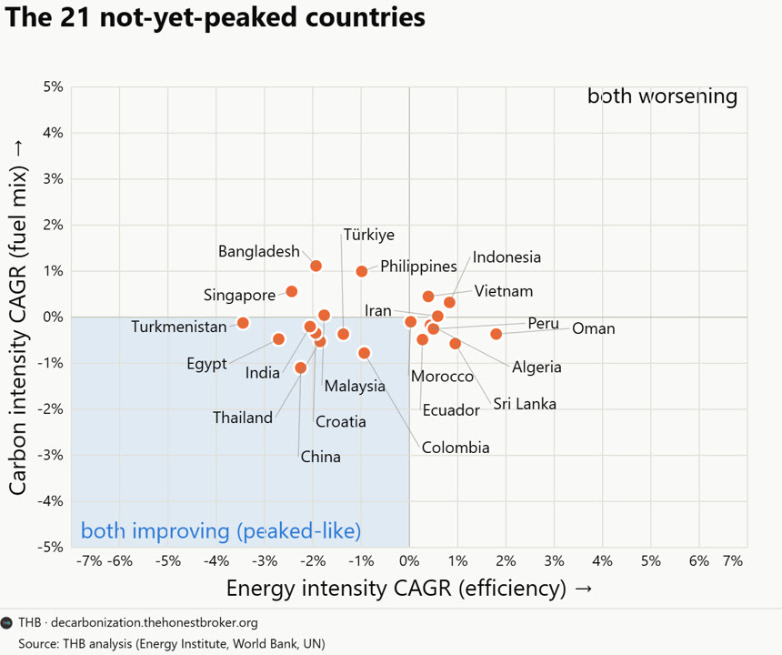
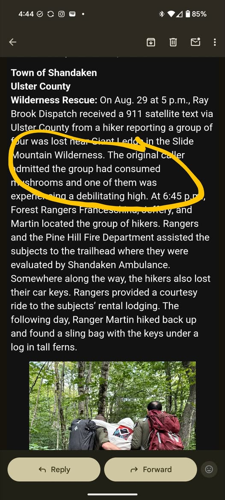

WEEKLY REMINDERS/ANNOUNCEMENTS – Eco 238, Week 3
Braddock Bay Raptor Research: I sent a payment of $50 to them this week, you can see receipts on the website. Three of your classmates in the WTA group accepted their share, so we ended up collecting a gross of $65 meaning most of you playing the game and who owed money actually paid.
Topics and Readings This Week: For the class material, I am going to finish the material on risk and popular environmental conceptions, then we will move onto the section on Efficiency. If you are interested in Energy Economics, please let me know, as we can stick that in at this point of the course, or at the end (I’m still waffling on when is the best time). Two years prior we spent 1/3 of the course on that topic so I need to trim it down, obviously.
Weekly Assignment: I have posted your third weekly assignment. So, to be clear, assignment #2 is due this Sunday the 13th and assignment #3 is due on Sunday the 20th. The new week 3 assignment is going to have you post a public analysis of the state of the National Environmental Policy Act and state of the current regulatory climate in the US.
EETT Project Part One: is included as part of this week’s homework. If you plan to skip the homework this week, you must STILL hand in the EETT Brainstorm portion. We are expecting fantastic papers this year, and we feel strongly that working on it individually and in stages is the best way to deliver a quality project that you will be proud of.
Discussion Portions of Your Weekly Assignments: Please check out Jingya’s weekly announcement.
Form Your Groups, Start Your Projects
All of the details on the what/how/who of the group projects
can be found under, “Projects” on Blackboard.
In addition, to aid you in finding group members (I encourage you to mill around before or after lecture, but I know some of you don’t love that idea) there is a tentative class list posted in the “Syllabus ...” folder on Blackboard. Excellent projects are those that are pondered and discussed and debated all semester long. It will be evident if you do or do not do this. Note that Professor Rizzo grades all non-weekly work for the course.
Our TAs will assist you in finding a group if and only if you have tried unsuccessfully for the first two weeks of class.
TA Office Hours and Info
Look for an announcement from our Head TA Jingyao Wang Wu for
an update.
The TAs are going to offer office hours and weekly discussion sessions which will enable you to explore class topics more deeply, and to dive into portions of the weekly class work (and possibly receive credit for doing so).
My Availability
Check tiny.cc/RizzoHours for up to date information.
I will be away from electronics from Friday afternoon through Sunday night.
See the special event for next Wednesday.
Career Opportunity
Scroll down here a little, Edgeworth just posted.
Upcoming Special Events
Department of Economics Engerman Lecture
“After Shocks: Adaptation and Growth through Volatile Times”

Who: Rick Hornbeck of the University of Chicago
Professor Hornbeck is the V. Duane Rath Professor of Economics at the University of Chicago Booth School of Business. He is a leading applied microeconomist and economic historian whose research explores the historical development of the American economy. By combining massive, newly digitized historical datasets with modern economic theory, his work uncovers the fundamental, long-term drivers of wealth, productivity, and living standards across generations. Professor Hornbeck’s research frequently reshapes how we understand major historical shifts and crises. His famous studies look beyond traditional metrics to evaluate the enduring economic footprint of environmental disasters like the 1930s Dust Bowl, the systemic human gains of post-Civil War emancipation, and the massive aggregate wealth generated by historical infrastructure expansions like the American railroad network. He holds a Ph.D. in Economics from the Massachusetts Institute of Technology (MIT) and previously served as the Dunwalke Associate Professor of American History in the Economics Department at Harvard University.
Day: Wednesday, September 16th
Time: 5:00pm
Where: Morey 321
Department of Economics Special Event

Title: Trade War!
Who: Professor Alessandria
Date: Tuesday, September 29th
Time: TBD
Location: TBD
More Info: There will be DINO BBQ served!
The Politics and Markets Project, Hosted by Professor David Primo
Title: Topic TBD (this will be a moderated panel discussion)
Date: Wednesday, November 4th
Time: 7:30pm to 8:30pm
Location: Wegmans Hall, 1400.
More Info on the PMP: Follow on Instagram
Department of Economics Special Guest Lecture
Title: Human Capital for Humans, with moderation by U of R Economics Undergraduate Isaac Miller
Who: Pablo Pena of the University of Chicago
Date: Thursday, October 8th
Time: TBD
Location: TBD
More Info: Why do people marry, have kids, invest in health, or choose a career? Economics has an answer, and it's not "supply and demand," it's human capital theory, the framework Nobel laureate Gary Becker built and spent his career applying to every domain of human life. Pablo Peña studied under Becker at Chicago, taught his famous course after him, and has now written the accessible version of that legendary class: Human Capital for Humans.
Join us for a talk and conversation with Professor Peña about the book — how economists think about parenting, aging, marriage, and the everyday decisions that shape who we become. Expect a short talk, a moderated discussion, and open Q&A. Copies of the book will be available for purchase (and signing) at the event.
About Professor Pena: Pablo Peña first encountered human capital theory twenty years ago as an undergraduate captivated by a course taught by Nobel laureate Gary Becker at the University of Chicago — an experience he's described as immediately clarifying. That encounter led him to TA the course, and eventually to teach it himself. Peña is now an Associate Instructional Professor in Economics and the College at the University of Chicago, specializing in applied price theory, human capital theory, and empirical economics, and his research uses experimental and quasi-experimental methods and large datasets to test economic theories with actionable applications for business, nonprofits, and government. Outside academia, he co-founded Microanalitica, previously served as Director of Private Sector Partnerships at the Development Innovation Lab, and headed Economic Studies at Mexico's National Banking and Securities Commission. He earned his Ph.D. in Economics from the University of Chicago.
His book, Human Capital for Humans: An Accessible Introduction to the Economic Science of People (University of Chicago Press, 2025), has been nominated as a finalist for the Manhattan Institute's 2026 Hayek Book Prize, and has drawn praise from economists including Steven Levitt, Tyler Cowen, and Nobel laureate Michael Kremer.
Department of Economics PIZZA and PAYOFFS Special Event

Title: Pizza and Payoffs: Everything you wanted to know about the Econ major — courses, careers, and what you can actually do with an economics degree.
Who: Professor Lisa Kahn and special guest Chris Nosko
Date: mid-November
Time: TBD
Location: TBD
More Info: Chris Nosko is the head economist for Amazon!
SOME THINGS THAT CAPTURED OUR ATTENTION
From Kelo to Kilowatts: They are asking the government to be able to condemn property in the name of renewables development. “We may even need to evoke eminent domain – we simply are not getting the adequate investments fast enough for grid, solar, wind and pipeline initiatives.”
Will We Be Sad When the Earth is Cleaned Up? “A mayor in South Korea is under fire for dumping tons of garbage on an area beach so that volunteer clean-up crews had something to remove … The event, which took place on September 21, was part of International Coastal Cleanup Day, intended to raise awareness of human pollution in the world's oceans. Groups of volunteers mobilized on beaches, recording waste items they found on a standardized card to create a clearer picture of the state of the environment.”
Ban the Bans: “The decision from the 9th U.S. Circuit Court of Appeals, which struck down the landmark ordinance in Berkeley, Calif., has unclear ramifications, although some legal scholars expressed concerns that it could have a chilling effect on states and cities pursuing similar bans.”
Were we Wrong About Forest Fire Fuel Buildup? “The debate only really applies to the forests which the paper calls “dry forests,” namely ponderosa pine and mixed conifer forests of the mountain West. These make up only about 40 percent of forests in the West. The other 60 percent, ecologists almost all agree, won’t benefit from fuels reduction (which doesn’t stop the Forest Service from spending money on it).”
Winner Updates Social Cost of Carbon to $61 per ton.
That
assumes a 3% discount rate. At 1%, the estimates exceed $400. At 5%,
the estimates are $33. If we implemented an efficient carbon tax, this
means gasoline prices would increase by about $0.51 per gallon. Your
mileage may vary on whether this is large or small. I See a Red
Door and I Want to Paint it … WHITE! “He calculated that if
materials such as Purdue’s ultra-white paint were to coat between 1
percent and 2 percent of the Earth’s surface, slightly more than half
the size of the Sahara, the planet would no longer absorb more heat than
it was emitting, and global
temperatures would stop rising.”
Elk at the All You Can Eat Buffet: “For years, golf course staff would drive elk off the greens with coordinated golf-cart maneuvers and paint-ball guns, efforts that drew little more than the equivalent of elk eyerolls. General manager Jason Bangild said they had better luck warding off elk with coyote statues soaked in coyote urine. “But it’s not a realistic option,” he said, " to keep moving decoys and buying gallons of urine.”
Economists Are Supposed to LIKE Congestion Pricing. But the devil, as always, is in the details.
Nuclear Own Goal: MIT study – shutting down nukes kills people and dirties the air. “Black people are disproportionately affected by the increased pollution. More people die even when the power plants are replaced by ‘renewables.“ Well, duh. But I don’t like this “body count” game. To quote an acquaintance of mine, “Mere survival be damned—we do not build nuclear power plants because we fear death. We build nuclear because we adore life and the rarified air of freedom. We build nuclear because we love life for the living of it.”
As we continue to obsess over climate change, we continue to devastate species. Here is the end of the world’s largest freshwater turtle.
Energy Transition Pipe(dreams): “Yet the U.S. is actually trending downwards when it comes to transmission builds. The American Clean Power Association found that new transmission builds in 2022 dropped 50 percent from 2021 levels. Utilities and transmission developers added only 675 miles of new transmission last year — the fewest miles built in the last decade.”
Woody Woodpecker Needs Woods: “Wildlife corridors link up these habitat patches. Since wildlife can travel and migrate from one patch to another, the probability of finding food and shelter is higher and they can still survive in the fragmented landscape.” Really great use of the eBird data here.
The Father of All Externalities? “Prolific sperm donor with over 500 children must pay $110K if he donates again, court rules”
CHART(S) OF THE WEEK: We’ve already hit PEAK CO2


PHOTO OF THE WEEK: IgNobel Prize Winner?

VIDEO/DOCUMENTARY/BOOK/CARTOON, ETC OF THE WEEK: Isn’t the book ALSO an intrusion?

“you and me. It's about how we are altered by the technology we employ, what we hope to learn, our relationship with nature, those we love, the time we spend, the energy that is consumed and how much freedom we relinquish to technology. Yes, it's true what many say, that distances are eclipsed by technology, but that is a banal fact. The central issue is rather, as Heidegger pointed out, that "nearness remains outstanding." In order to achieve nearness, we must, according to the derided philosopher, relate to the truth, not to technology. Having tried my hand at internet dating, I am inclined to agree with Heidegger.
(Of course, Heidegger could not have predicted the possibilities offered by current technology. He was thinking about cars of fifty horsepower, film projectors and punch-card machines, which were all the rage. But he had an inkling of what might come.)
We are going to give up our own freedom in our eagerness to use new technology, Heidegger claimed. To shift from being free people to becoming resources. The thought is even more fitting now than when he first expressed it. We will not become a resource for one another, unfortunately, but for something less appealing. A resource for organizations such as Apple, Facebook, Instagram, Google, Snapchat and governments, who are trying to map us all out, with our voluntary assistance, in order to use or sell the information. It smacks of exploitation.
The question that Humpty Dumpty poses to Alice remains: "Which is to be master-that's all." You, or someone you don't know?
Humans are social creatures. Being accessible can be a good thing. We are unable to function alone. Yet it's important to be able to turn off your phone, sit down, not say anything, shut your eyes, breathe deeply a couple of times and attempt to think about something other than what you are normally thinking about.
The alternative is to not think anything at all. You may call this meditation, yoga, mindfulness or merely common sense. It can be good. I take pleasure in meditating and practicing yoga. I've also taken up the cousin to this practice-hypnosis-and hypnotize myself for twenty minutes in order to disconnect.
* * *QUOTE * * *
“WL’s [White Liberals] think all the world’s problems can be fixed without any cost to themselves. We don’t believe that. There’s a lot to be said for sacrifice, remorse, even pity. It’s what separates us from roaches”
…
“among a coward's weapons, cynicism is the nastiest of all”
― Paul Farmer, Mountains Beyond Mountains: The Quest of Dr. Paul Farmer, a Man Who Would Cure the World